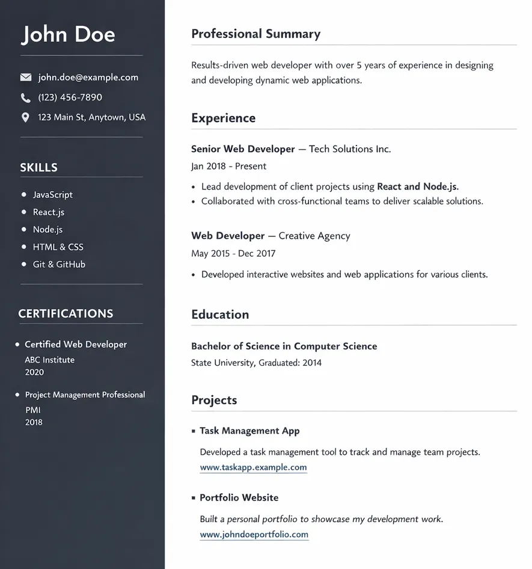
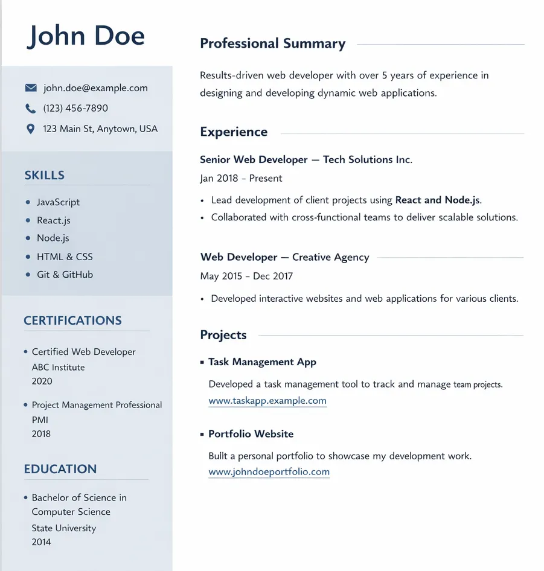
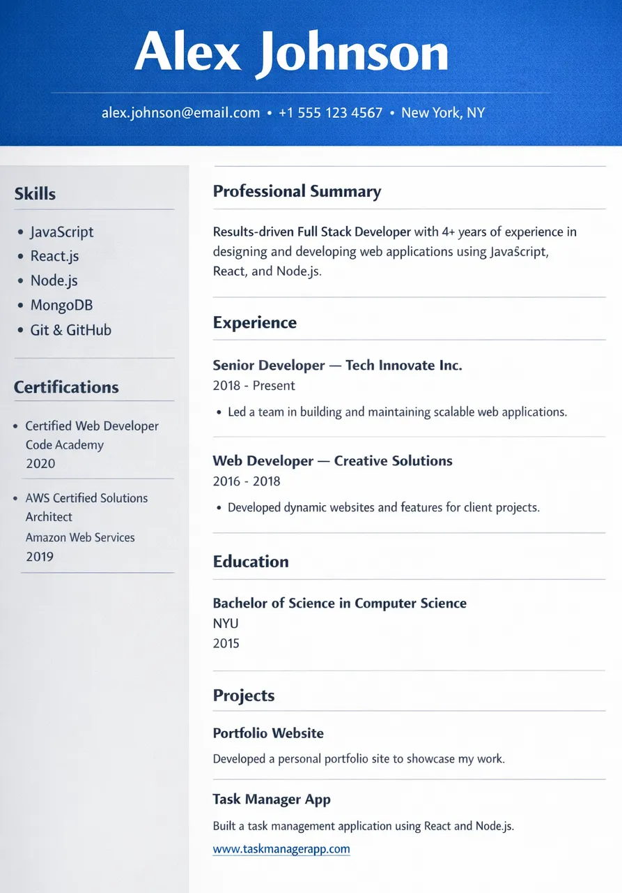
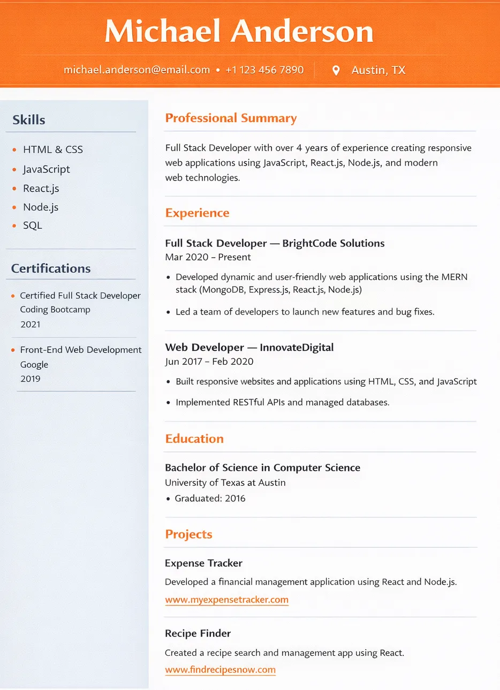
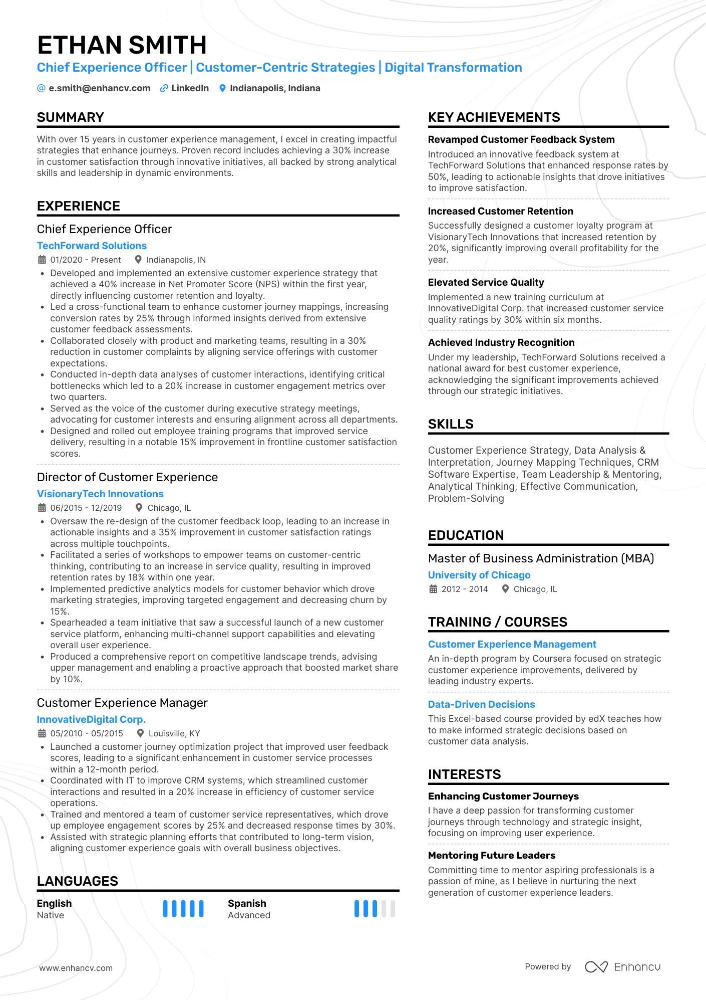
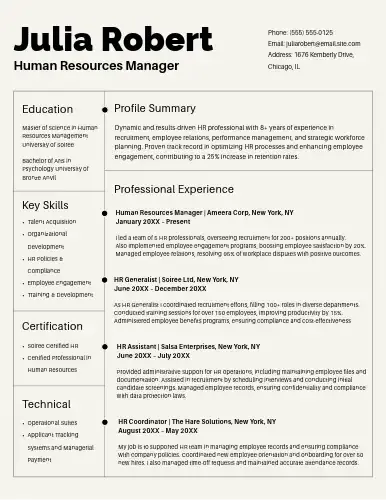
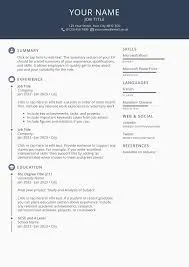
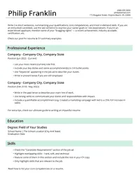

ONLINE FREE RESUME BUILDER
Only 5% of resumes make it past the first round. Be in the top 5%
Create Your Simple, Professional Resume in Minutes!
510 resumes created today
Gallery






About CareerPilot
Build a resume with CareerPilot that feels premium and professional
CareerPilot helps you shape your story with elegant templates, guided sections, and exports that look consistent everywhere.

